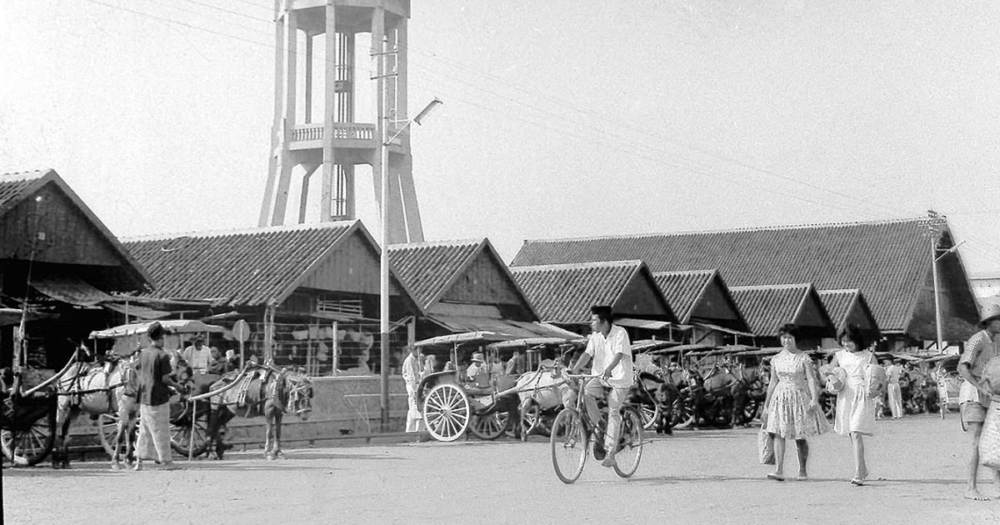
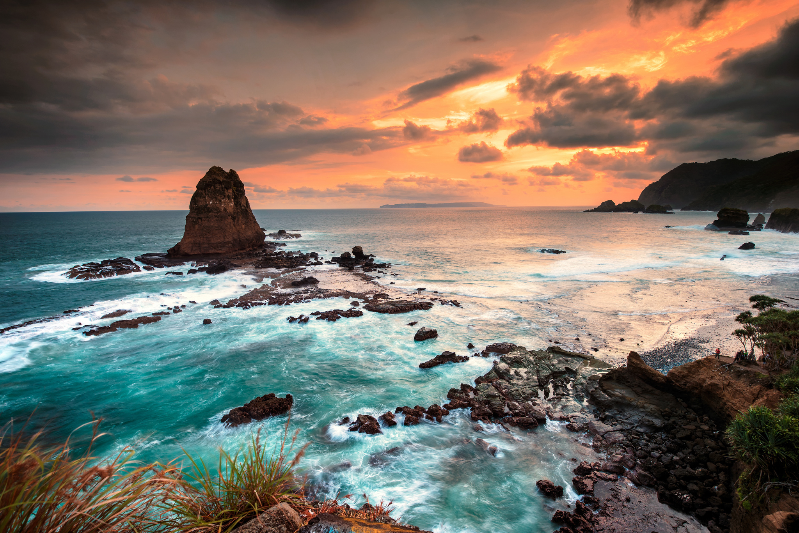

WELCOME TO JEMBER
Anda Memasuki Kota Jember Penuh Kenangan
Sejarah
Jember adalah salah satu kabupaten yang terletak di wilayah Jawa Timur. Jember memiliki luas 3.293,34 km2 dengan ketinggian antara 0 - 3.330 mdpl. Kabupaten Jember memiliki luas ±3.293,34 km2, dan panjang pantai ±170 km, sedangkan Zona Ekonomi Ekslusif (ZEE) ± 8.338,5 km2 dan berbatasan langsung dengan Kabupaten Banyuwangi, Bondowoso, Lumajang.
Mayoritas penduduk Kabupaten Jember adalah Suku Jawa dan minoritas Suku Osing dan Suku Madura yang sebagian besar beragama Islam. Suku Madura dominan di daerah utara dan Suku Jawa di daerah selatan dan pesisir pantai. Percampuran kedua kebudayaan Madura dan Jawa di Kabupaten Jember melahirkan satu kebudayaan baru yang bernama budaya Pendalungan. Masyarakat Pendalungan di Jember mempunyai karakteristik yang unik sebagai hasil dari penetrasi kedua budaya tersebut. Kesenian Can Macanan Kaduk merupakan satu hasil budaya masyarakat Pendalungan yang masih bertahan sampai sekarang di Kabupaten Jember.
Jember dalam sejarah dan perjalananya di mulai dari masa kerajaan dalam hal ini Majapahit adalah salah satu kerajaan yang memiliki andil besar terhadap dimulainya peradaban Jember. Cerita Jember menurut buku Nagarakretagama (1953) karangan Prof. Slamet Muljana seorang ahli Filologi dari Universitas indonesia (UI). Buku ini kebetulan salah satu dari koleksi buku sejarah. Perpustakaan universitas Muhammadiyah Jember. Menurut buku tersebut tertulis bahwa Raja Majapahit Hayam Wuruk yang bergelar "Rakryan Mantri Maka Pramuka" mencapai masa kejayaannya dalam memerintah Majapahit bersama Mahapati Amangkubumi Gajah Mada dan beliau bersama para punggawa kerajaan melakukan perjalanan dari Majapahit menuju wilayah timur hingga daerah Patukangan Situbondo. Jember adalah sebagai daerah perlintasan Raja beserta rombongan pada tahun 1359 M. Terbukti dengan bekas peninggalannya yang masih bisa kita lihat hingga kini yaitu tersebar di daerah Jember selatan dua diantaranya adalah Candi Deres yg terletak di Desa Purwoasri Kec. Gumukmas dan sumur kuno tembikar di Desa Muneng Kec. Gumukmas Jember.
Pada masa Tribuwana Tungga Dewi, pusat peradaban terbesar berada di wilayah Pegunungan Sadeng tepatnya di wilayah Kec. Puger Jember Selatan. Kerajaan Sadeng adalah kerajaan kecil di wilayah Jember selatan sebagai salah satu pemasok lumbung pangan Majapahit dari Wilayah timur. Kerajaan ini runtuh akibat perang Sadeng (Pasadeng) tahun 1331 M atau juga dikenal dengan pemberontakan Sadeng oleh Gajah Mada dan para prajurit Majapahit yang penuh unsur politik terhadap kewibawaan Gajah Mada dan kepemimpinan Tribuwana Tungga Dewi.
Pada masa kolonial, kawasan ini disebut sebagai Java’s Oosthoek yang merupakan cikal bakal lahirnya Jawa Timur. Penguasa Mataram Pakubuwono II yang terdesak menghadapi perlawanan pemberontak Untung Suropati dan Trunojoyo, menggadaikan wilayah ini pada VOC. Pada masa Perang Puputan Bayu (1771-1774) daerah Puger, Kedawung dan Nusa Barong di Jember menjadi basis pertahanan melawan VOC. Ketika di Belanda golongan liberal dengan Open Door Policy nya berkuasa, Jember dirubah menjadi lahan perkebunan (afdeling) untuk komoditi tembakau, lalu kopi, kakao, dan karet selama berpuluh-puluh tahun. Jejak masa perkebunan tembakau ini kental mewarnai khasanah sejarah Jember hingga sekarang.
Wisata
Secara geografis, bagian selatan Jember memang berbatasan dengan Samudera Hindia. Maka dari itu, tidak heran jika kota suwar-suwir ini memiliki banyak gugusan pantai, terutama di sisi barat dan selatan. Namun, pantai bukan satu-satunya tempat wisata di Jember yang bisa dikunjungi. Ada banyak lainnya yang juga sayang untuk dilewatkan. Nah, berikut ini adalah referensi tempat wisata di Jember yang kami rekomendasikan untuk memaksimalkan perjalanan Anda di kota ini.
1. Pantai Pasir Putih
Lokasi: Desa Lojejer, Kecamatan Wuluhan, Kabupaten Jember, Jam operasional: 24 jam, Harga tiket: Rp17.000
2. Pantai Watu Ulo
Lokasi: Desa Sumberejo, Kecamatan Ambulu, Kabupaten Jember, Jam operasional: 24 jam, Harga tiket: Rp5.000 (parkir)
3. Pantai Payangan
Lokasi: Desa Sumberejo, Kecamatan Ambulu, Kabupaten Jember, Jam operasional: 24 jam, Harga tiket: Rp5.000 (parkir)
4. Pantai Puger
Lokasi: Kecamatan Puger, Kabupaten Jember, Jam operasional: 07.00-17.00, Harga tiket: Rp10.000
5. Pantai Paseban
Lokasi: Kecamatan Kencong, Kabupaten Jember, Jam operasional: 07.00-23.00, Harga tiket: Rp10.000 (parkir)
6. Pantai Bandealit
Lokasi: Desa Andongrejo, Kecamatan Tempurejo, Kabupaten Jember, Jam operasional: 24 jam, Harga tiket: Rp. 15.000
7. Pantai Nanggelan
Lokasi: Kecamatan Tempurejo, Kabupaten Jember, Jam operasional: 24 jam, Harga tiket: Rp10.000 (parkir)
8. Pantai Cangak
Lokasi: Desa Sabrang, Kecamatan Ambulu, Kabupaten Jember, Jam operasional: 24 jam, Harga tiket: Rp. 15.000
9. Teluk Love
Lokasi: Pantai Payangan, Desa Sumberejo, Kecamatan Ambulu, Kabupaten Jember, Jam operasional: 06.00-23.00, Harga tiket: Rp5.000 (tiket)
10. Pulau Nusa Barong
Lokasi: Kecamatan Puger, Kabupaten Jember, Jam operasional: 24 jam, Harga tiket: Rp1.500.000 (menyewa kapal menyeberang untuk delapan orang)
Kecamatan
| No | Kecamatan | Kode Pos |
|---|---|---|
| 1 | Ajung | 68175 |
| 2 | Ambulu | 68177 |
| 3 | Arjasa | 68174 |
| 4 | Bangsalsari | 68154 |
| 5 | Balung | 68198 |
| 6 | Gumukmas | 68145 |
| 7 | Jelbuk | 68153 |
| 8 | Jenggawah | 68177 |
| 9 | Jombang | 68166 |
| 10 | Kalisat | 68133 |
| 11 | Kaliwates | 68122 |
| 12 | Kencong | 68111 |
| 13 | Ledokombo | 68199 |
| 14 | Mayang | 68144 |
| 15 | Mumbulsari | 68177 |
| 16 | Panti | 68100 |
| 17 | Pakusari | 68184 |
| 18 | Patrang | 68432 |